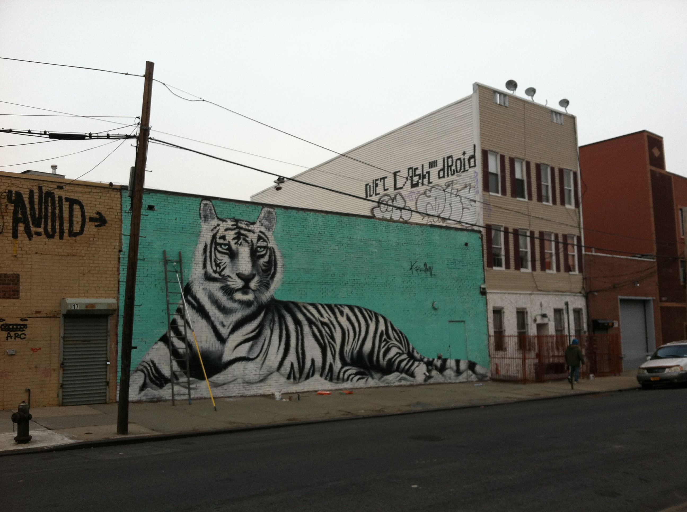

<div class="home">
<!-- <center>
  <h3>Live and die by the khakis...</h3>
</center> -->

</br></br>
<center>
<h2>Artists</h2>
    <a href="http://pilotsuits.us" target='_blank'>PilotSuits.</a> </br>
    <a href="http://lh2b.com" target='_blank'>Left-Handed 2nd Baseman</a> </br>
    <a href="http://themeanjeanoaks.com" target='_blank'>The Mean Jean Oaks</a> </br>    
    <a href="http://www.facebook.com/fridayinamerica" target='_blank'>Friday in America</a> </br></br>
<h2>Music</h2>
<iframe src="https://embed.spotify.com/?uri=spotify:user:jajajrjr:playlist:58W3SXgCLggHljQqC9hZJp" width="100%" height="550" frameborder="0" allowtransparency="true"></iframe>
<h2>Twitter</h2>
<a class="twitter-timeline" href="https://twitter.com/JajaJrjr" data-widget-id="575049930009677824">Tweets by @JajaJrjr</a> <script>!function(d,s,id){var js,fjs=d.getElementsByTagName(s)[0],p=/^http:/.test(d.location)?'http':'https';if(!d.getElementById(id)){js=d.createElement(s);js.id=id;js.src=p+"://platform.twitter.com/widgets.js";fjs.parentNode.insertBefore(js,fjs);}}(document,"script","twitter-wjs");</script>

</center>
<!--   <h1 class="page-heading">Posts</h1>

  <ul class="post-list">
    {% for post in site.posts %}
      <li>
        <span class="post-meta">{{ post.date | date: "%b %-d, %Y" }}</span>

        <h2>
          <a class="post-link" href="{{ post.url | prepend: site.baseurl }}">{{ post.title }}</a>
        </h2>
      </li>
    {% endfor %}
  </ul>

  <p class="rss-subscribe">subscribe <a href="{{ "/feed.xml" | prepend: site.baseurl }}">via RSS</a></p> -->

</div>
